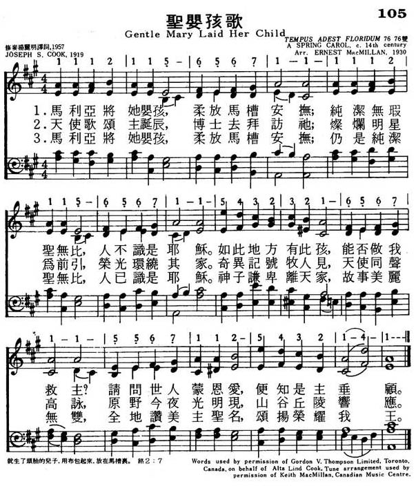

|
|
|
|
1 Gentle Mary laid her Child 2 Angels sang about His birth; 3 Gentle Mary laid her Child Baptist Hymnal,, 199 |
105圣婴孩歌
1.玛利亚将她婴孩,柔放马槽安抚;
纯洁无瑕圣无比,人不识是耶稣. 如此地方有此孩,能否做我救主? 请问世人蒙恩爱,便知是主垂顾. 2.天使歌颂主诞辰,博士去拜访他, 璀璨明星为前引,荣光环绕其家. 奇异记号牧人见,天使同声高咏, 原野今夜光明现,山谷丘陵声应. 3.玛利亚将她婴孩,柔放马槽安抚; 仍是纯洁圣无比,人已识是耶稣. 神子谦卑离天家,故事美丽无双, 全地赞美主圣明,颂扬荣耀我王. |
|
https://www.mred365.cn/szxg/7108.html
 |
|
|
|
|
-

Gentle Mary Laid Her Child | Hymn | Accompaniment | Lyrics https://youtu.be/RA-kVcaY7Jg -
Gentle Mary Laid Her Child (Tempus Adest Florium) https://youtu.be/ayoZydOhe6c
LX1541
Gentle Mary Laid Her
Child
105圣婴孩歌
颂新
| Text: | Gentle Mary Laid Her Child |
| Author: | Joseph S. Cook |
| Tune: | TEMPUS ADEST FLORIDUM |
| Arranger: | Ernest Macmillan |
| Short Name: | Joseph S. Cook |
| Full Name: | Cook, Joseph S. (Joseph Simpson), 1859-1933 |
| Birth Year: | 1859 |
| Death Year: | 1933 |
Cook, Joseph Simpson. (Durham County, England, December 4, 1859--May 27, 1933, Toronto, Canada). Methodist. Wesleyan Theological College (Montreal) certificate, 1885; B.D., 1893; Illinois Wesleyan University, M.A., 1892; S.T.D., 1903. Pastorates in Ontario at Bayfield (1881-1882); Bluevale (1885-1887); Hensall (1888-1890); Ripley (1891-1893); Granton (1894-1896); Walkerville (1896-1898); Wallaceburg (1899-1902); Clinton (1903-1904); Ridgetown (1905-1908); Toronto (1909-1913, 1919-1925); Meaford (1914-1916); and Gravenhurst (1917-1918). He contributed articles and verse to many church-connected magazines. His best-known hymn, "Gentle Mary laid her child Lowly in a manger" won a 1919 contest of the Methodist weekly Christian Guardian.
The theme of the hymn is the significance of the Christ-child. In the first stanza, he is depicted as a lowly, unremarkable human baby; some doubts exist as to whether someone so apparently ordinary could be so special. After the second stanza recounts the spectacular appearance of angels and wise men glorifying the Christ, the third stanza describes how the picture changed with this new understanding – no longer is he a stranger of dubious ability, but the undefiled Son of God who has come to save the world.
Text:
“Gentle Mary Laid Her Child” was written by Joseph Simpson Cook in 1919. One writer reports that it “was written in 1919 for a carol competition sponsored by the Christian Guardian and was first published in the Christmas issue of the magazine by the Methodist Publishing House, Toronto” (Fred D. Gealy, Companion to the Hymnal, p. 185). The first and third stanzas share the same structure and similar wording as they bracket the second stanza, which describes a high point of the Christmas story.
Tune:
The tune TEMPUS ADEST FLORIDUM is named after its original Latin text, which was loosely translated into English as “Spring has now unwrapped the flowers.” It was originally a spring carol, but is better known with the Christmas carol “Good King Wenceslas.” The source of this tune is the 1582 collection Piae Cantiones.
When/Why/How:
This hymn is sung in Christmas services. It could be paired with another hymn about the angels' visit to the shepherds, such as “Angels From the Realms of Glory” or “While Shepherds Watched Their Flocks.”
Hal Hopson's setting of “Gentle Mary Laid Her Child” for choir and keyboard fits the simplicity of the tune, and includes optional instruments (string quartet, handbells). Especially effective is the second verse, which is about the angels visiting the shepherds, where the lower voices sing the angels' song in Latin, “Gloria in excelsis Deo,” underneath the melody in the soprano. Gilbert Martin has set the text of “Gentle Mary” to an original melody in his choral arrangement. Instrumental arrangements that could be used for a prelude or special music include “Good King Wencesles”, a handbell arrangement of the tune by Martha Lynn Thompson with a full sound, and “A Carol Suite” by Michael Burkhardt, which includes a setting of this tune for organ and clarinet or oboe, and flute.
Tiffany Shomsky,
Hymnary.org
| Short Name: | Sir Ernest MacMillan |
| Full Name: | MacMillan, Ernest, Sir, 1893-1973 |
| Birth Year: | 1893 |
| Death Year: | 1973 |
Ernest MacMillan (Conductor)
Born: August 18, 1893 -
Mimico, Canada
Died: May 6, 1973 - Toronto, Canada
The eminent Canadian conductor and composer, Sir Ernest (Alexander Campbell) MacMillan, began his organ studies with Arthur Blakeley in Toronto at age 8, making his public debut at 10. He continued his organ studies with A. Hollins in Edinburgh from 1905 to 1908, where he was also admitted to the classes of F. Niecks and W.B. Ross at the University.
Ernest MacMillan was made an associate (1907) and a fellow (1911) of London’s Royal College of Organists, and in 1911 received the extramural Bachelor of Music degree from the University of Oxford. He studied modern history at the University of Toronto from 1911 to 1914, before receiving piano instruction from Therese Chaigneau in Paris in 1914. In 1914 he attended the Bayreuth Festival, only to be interned as an enemy alien at the outbreak of World War I. While being held at the Ruhleben camp near Berlin, he gained experience as a conductor. He was awarded the B.A. degree in absentia by the University of Toronto in 1915. His ode, England, submitted through the Prisoners of War Education Committee to the University of Oxford, won him his Doctor of Music degree in 1918.
After his release, Ernest MacMillan returned to Toronto as organist and choirmaster of Timothy Eaton Memorial Church from 1919 to 1925. In 1920 he joined the staff of the Canadian Academy of Music, and remained with it when it became the Toronto Conservatory of Music, serving from 1926 to 1942 as its principal. He was also dean of music faculty at the University of Toronto from 1927 to 1952.
Ernest MacMillan was conductor of the Toronto Symphony Orchestra from 1931 to 1956, and of the Mendelssohn Choir there from 1942 to 1957. He also appeared as guest conductor in North and South America, Europe, and Australia. He served as president of the Canadian Music Council from 1947 to 1966, and of the Canadian Music Centre from 1959 to 1970. In 1935 he was the first Canadian musician to be knighted, an honour conferred upon him by King George V. He also received honorary doctorates from Canadian and USA institutions. He conducted many works new to his homeland, both traditional and contemporary.
--www.bach-cantatas.com/